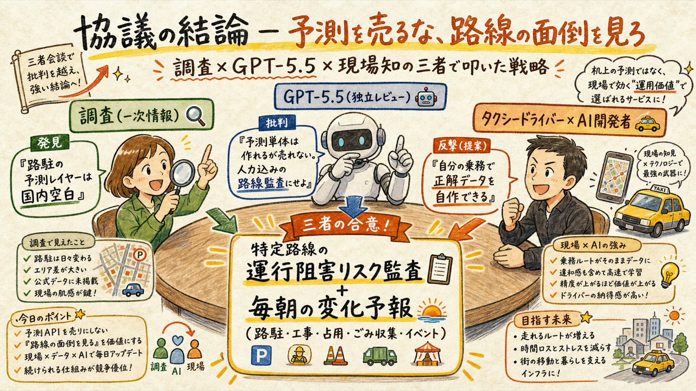
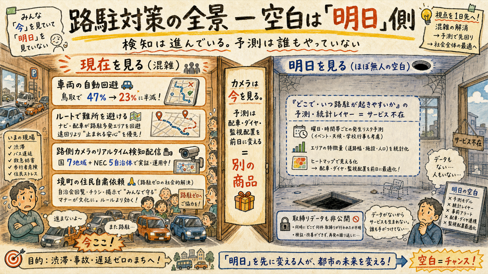
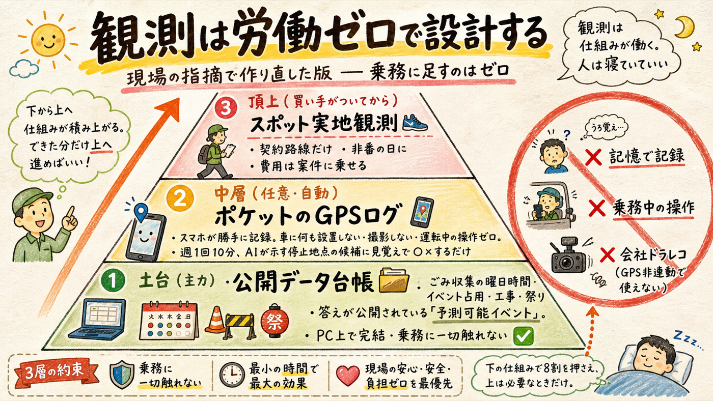
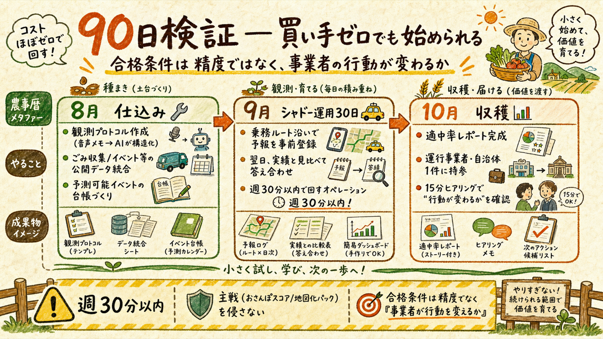

「路駐が最大の課題」— その通りだったので、①誰がどう解決しようとしているかを一次情報で調査し、②その材料で外部AI（GPT-5.5/codex）に私の仮説を批判させ、③批判に現場の非対称で反撃して統合した。結論: 売り物は「路駐予測API」ではなく「特定路線の運行阻害リスク監査＋毎朝の変化予報（人力込み）」。そして個人には作れないとされた正解データは、タクシー乗務そのもので自作できる。
調査（事実）× GPT-5.5（批判）× 現場知（反撃）

| 席 | 持ち込んだもの | 結論への寄与 |
|---|---|---|
| 🔍 調査（一次情報） | 対策全景と空白の特定（下記02） | 「明日を見るレイヤーは誰もやっていない」＝機会の存在証明 |
| 🤖 GPT-5.5（独立レビュー・忖度なし指示） | 仮説「路駐予測レイヤー」への批判と代替案 | 予測単体の商品化を棄却。「人力込みの路線監査」へ転換。検証設計（シャドー運用）を提示 |
| 🚕 現場知（あなた） | 毎日路上にいる非対称 | 「個人に正解データは作れない」への唯一の反例＝乗務での答え合わせ |
※ GPT-5.6（oracle・重量版）はChromeのChatGPT未ログインで今回接続不可。ログイン後に同じ相談文で追加協議し、結論が変わればこの資料を改訂する。
対策の全景マップ（一次情報）

| 対策 | 実例（一次情報） | 性質 |
|---|---|---|
| 車両の自動回避 | 鳥取: システム更新＋狭路を外すルート再選定＋信号連携＋路側カメラで介入47%→23%に半減。ティアフォーは塩尻で介入なし回避も実現 | 「今」への対応。対向車が多い区間・はみ出し禁止線では依然介入が残る |
| 路側カメラのリアルタイム検知配信 | 国交省が7地域で実証公募、NECはローカル5Gで5自治体 | 「今」を知らせる路車協調。設置コストが高くカメラのある場所しか見えない |
| 社会側の解決 | 境町: 町＋運行事業者が住民に自粛依頼→ルート上の路駐が「皆無」に | 最も効いた対策が技術ではなかったという重要な実例 |
| 予測・事前情報（明日） | 国内サービス不在（確度85%）。取締りデータのオープン化もなし。ルート選定の路駐調査は人手・目視（足立区） | 空白。ここが入り口 |
重要な整理 — カメラが普及しても予測は死なない: カメラは「現在」を見る装置で、予測は「配車・ダイヤ・監視員配置を数時間〜前日に変える」ための別物。ただし裏返しの条件もある: 先行時間で運行を実際に変えられない相手には価値ゼロ。だから買い手選びが商品設計そのものになる。
耳が痛い順。これを通ったものだけを採用した
「個人には持てない」の唯一の反例が、あなたの職業

GPT-5.5の批判1は一般論として正しい——普通の個人には。しかしあなたは週5万km級の路上観測を給料をもらいながら行う職業にいる。「網羅的な教師データ」は確かに持てないが、codex自身が言う通り商品は「特定路線」限定。特定路線＋その近傍なら、正解データは乗務で自作できる:
さらにcodexの「予測可能イベントから始めろ」は実装コストほぼゼロで着手できる: ごみ収集の曜日・時間帯は区の公開情報。イベント・祭りの占用は工事お知らせAIが既に扱う領域。搬出入・客待ちのパターンはあなたの頭の中に既にある。「予測の難しい路駐」は最後でいい — 予報の当たる部分から信頼を作る。
週30分以内・主戦を侵さない

| 月 | やること | 担当 |
|---|---|---|
| 8月 | 観測プロトコル整備（乗務中の音声メモ→AIが構造化する仕組み）／ごみ収集・イベント・工事の公開データを「予測可能イベント台帳」に統合／シャドー運用の対象路線を1本選定（乗務で頻繁に通る道） | 仕組みはAI、路線選定はあなた |
| 9月 | シャドー運用30日: 前夜に予報登録→乗務中に○×→週次で適中率集計。週30分以内 | 記録はあなた（乗務のついで）、集計・改善はAI |
| 10月 | 適中率レポート完成→大田区ヒアリング／運行事業者・自治体1件に「1ルート無料の答え合わせ」を提案（3分トーク台本と接続） | 資料はAI、対面はあなた |
ガードレール: ①週30分以内 — 超えたら縮小（主戦はおさんぽスコアと地図化パック） ②合格条件は適中率の高さではなく「レポートを見た事業者が行動（迂回・時刻変更・配置変更・有償継続）を変えるか」 ③ナンバー・顔・個人特定情報は記録しない ④G-Pゲート（10月末）の判断材料の一つとして扱い、これ自体を主戦に昇格させるのはゲートを通してから。